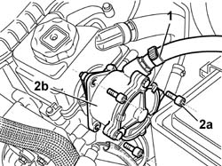
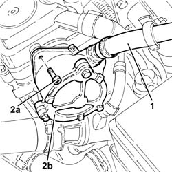

3330D30 vacuum pump - r+r
- Path
- Procedures > 33 BRAKES > 3330 HYDRAULIC BRAKE SYSTEM > 3330D brake vacuum system > 3330D30 vacuum pump - r+r
- Kind
- repair procedure (removal / refitting; the operation number is the code)
- Applies to
- engines: 1.9 JTD 8V, 1.9 DIESEL; all production periods
- Interactive page
- https://sloeber94.github.io/elrnDB-fDbl/en/#/2584672
Applies to: engines: 1.9 DIESEL; all production periods
 Removing
Removing
 Refitting
Refitting1. Disconnect the vacuum pipe from the vacuum pump by undoing the retaining collar.
2. Undo the bolts (2a) and remove the vacuum pump (2b) complete with O ring.
Recover the vacuum unit gasket from its seating.

Applies to: engines: 1.9 DIESEL; all production periods
Refitting
RemovingReplace the gasket and the O-ring before refitting.
Fit the vacuum unit.
Tighten the fixing bolts to torque.
 | Fastening | Component | Ø | Value (daNm) |
|---|---|---|---|---|
- | Bolt | BRAKE SERVO VACUUM PUMP | M8 x 1.25 | 2.5 |
Connect the vacuum pipe to the vacuum pump and secure by means of a collar.
Applies to: engines: 1.9 JTD 8V; all production periods
Removing
Refitting1. Loosen the band and disconnect the brake servo vacuum pipe from the vacuum unit.
2. Undo the bolts (2a) and remove the vacuum unit (2b) complete with O-ring.
Remove the seal.

Applies to: engines: 1.9 JTD 8V; all production periods
Refitting
RemovingPlace the gasket back in its housing.
Place the vacuum unit, complete with O-Ring, back in its housing and secure it tightening the bolts to the recommended torque.
| Fastening | Component | Ø | Value (daNm) |
|---|---|---|---|---|
- | Bolt | BRAKE SERVO VACUUM PUMP | M8 | (Cylinder head side) 2.3 ÷ 2.8 |
Connect the brake servo vacuum pipe to the vacuum unit and tighten the band.